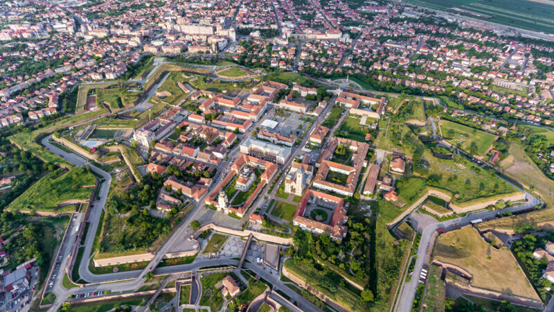
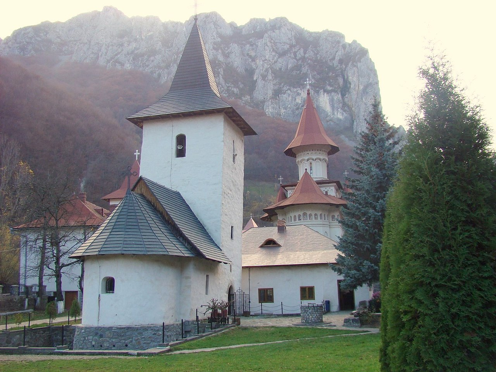
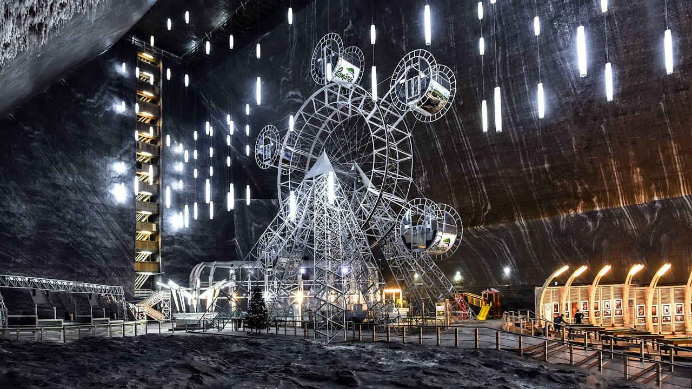
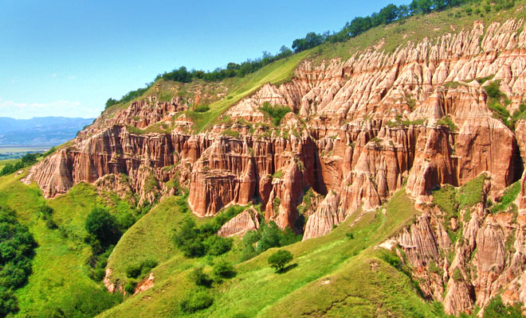

CETATEA ALBA CAROLINA
 Cunoscute ca un adevarat leagan de civilizatie, tinuturile Albei va ofera o intreaga pleiada de vestigii si monumente istorice, prilej de educatie si de aduceri aminte asupra vremurilor apuse! Daca toate aceste constructii poarta pecetea omului, monumentele naturiisunt pline de har Dumnezeiesc, iar Dvs. poposind la Pensiunea Colev, veti avea parte de amandoua.
Exista multe locuri din Romania care te pot uimi prin frumusetea si isooria lor. Unul dintre aceste locuri este Cetata Alba Carolina din orasul Alba Iulia. Construita la inceputul secolului XVIII, cetatea a avut rol de aparare impotriva imperiului Otoman, insa de-a lungul celor aproape 300 de ani de viata a reusit sa faca mai mult de atat si sa fie parte a unor intamplari istorice majore, cum ar fi Marea Unire de la 1 Decembrie 1918. O vizita la Cetatea Alba Carolina iti poate dezvalui, insa, mult mai multe lucruri decat iti poate spune istoria.
Daca ajungi sa vizitezi cetatea Alba Carolina nu trebuie sa ratezi si Muzeul Unirii, sau Muzeul Principia,Catedrala Incoronarii, cea de-a doua catedrala este Catedrala Romano Catolica Sf. Mihail, care este unul dintre cele mai vechi monumente din Transilvania sau Obeliscul lui Horia Closca si Crisan care iti contureaza mai bine cunostintele despre cetate si despre istoria ei. Are sapte porti de intrare, cea mai impresionanta fiind cea de-a 3-a. Aceasta este numita "Poarta Carolina Superioara" si este conceputa in forma de dublu arc de triumf.
MANASTIREA RAMET

Manastirea Ramet este unul dintre cele mai vechi asezaminte calugaresti din Transilvania. Ridicata în Muntii
Trascaului, pe langa raul Geoagiului intr-un loc numit de mocani "Valea Manastirii", bisericuta cu hramul Izvorul Tamaduirii poarta ascunse in zidurile-i firave nu putine taine. Se cunoaste cu precizie ca al treilea strat de fresce de pe zidurile interioare a fost pictat de Mihu de la Crisul Alb in 1377. Acest element face din lacas unul dintre putinele biserici romanești de piatra databile, poate, in secolul XIII.
Manastirea si biserica s-au aflat sub protectia lui Matei Corvin, a voievodului Radu Voda cel Mare, precum si a lui Mihai Viteazu, care a refacut-o. Manastirea pastreaza in registrul iconografic pictat in interiorul ei, una dintre imaginile rare ale episcopului unit al Blajului, Ioan Inocentiu Micu-Klein, ca protector al lacasului de cult. Perioada zbuciumata a celei de-a doua jumatati a secolului XVIII, marcata de luptele confesionale dintre romani, cu acea rascoala pornita de calugarul Sofronie este consemnata de unul dintre calugarii uniti (bazilitani) de-aici: "scris-am eu Silvestru monahu cand au stricat necredinciosii manastirea de la Ramet si cea de la Geoagiu, la anul 1762, in august 20, intr-o zi de sambata spre pieirea loru".
Dupa o noua distrugere, ca represalii pentru participarea localnicilor la rascoala lui Horea, Closca si Crisan, (1785), biserica este refacuta in 1792. Manastirea se redeschide la 1940, iar in 1955 sinodul hotaraste transformarea ei in manastire de maici. In 1959, este desfiintata de comunisti, dar maicile revin in 1962, sub "acoperirea" unei sectii de covoare.
SALINA TURDA

Salina Turda se gaseste in zona Valea Sarata-Durgau din Turda.
Intrarea in Salina se face prin 2 cai:
din str. Salinelor 54/A (intrarea veche din cartierul Turda Noua) si prin noua si moderna intrare din centrul turistic Salina-Durgau (Aleea Durgau nr. 7) aflata in mijlocul Rezervatiei Naturale. Accesul la Salina Turda prin intrarea veche este recomandata pentru cei care nu dispun de autoturisme proprii. In zona Valea Sarata-Durgau se poate ajunge si cu mijloc de transport in comun, autobuzul 17.
In salina va puteti relaxa intr-un mod foarte placut, intr-un microclimat specific unei mine de sare. In cadrul centrului de tratament exista posibilitatea sa beneficiati si de sedinte personalizate.
In Mina Rudolf exista o roata uriasa, cu 6 gondole, de unde cei dornici pot admira un peisaj panoramic. Acelasi peisaj panoramic poate fi admirat din liftul cu care se poate cobora in Mina Rudolf, unde exista si piste de minigolf, mese de biliard, teren sintetic de fotbal/volei/handbal/mese de ping-pong, loc de joaca pentru copii cu tobogane, bowling si un amfiteatru cu 200 locuri avand scaune incalzite electric.
Din Mina Rudolf se poate cobora pe scari sau prin intermediul unui lift modern in Mina Terezia, loc in care exista un lac format in urma infiltrarii precipitatiei de la suprafaţa. In mijlocul lacului exista o insula de unde se pot inchiria barci. Pe insula se poate ajunge trecand peste un ponton, confectionat din lemn.
Salina Turda este inscrisa pe lista monumentelor istorice din judetul Cluj, elaborata de Ministerul Culturii si Cultelor din Romania in anul 2004 si a fost reamenajat cu sprijinul financiar al Uniunii Europene in anul 2009.
RAPA ROSIE
 Rapa Rosie sau Micul Canion din Romania este o arie protejata din judetul Alba care se intinde pe 10 ha, fiind singura formatiune geologica de tipul acesta din tara. Aflata la 3km de orasul Sebes, Rapa Rosie se poate observa si de pe autostrada A1, cu toate acestea zona este inca bine conservata si nevizitata de un numar mare de turisti.
Probabil ca, pe langa peretii spectaculosi de roca rosie, locul mai uimeste si prin faptul ca natura din zona a ramas intacta, fara a interveni omul intr-un anumit fel. Peisajul pare scos dintr-un tablou iar linistea naturii te face sa uiti ca esti la o aruncatura de bat de oras. Fara doar si poate e una din cele mai frumoase creatii ale naturii din Romania. Eroziunile ploilor si a vanturilor au creat "riduri"" in stancile inalte de peste 120 de metrii. Printre acestea parca au fost presarate smocuri de vegetatie, intregind acest cadru divin.O data ce vei descoperi acest loc vei fi cucerit iremediabil. Platoul de la poalele rapei este foarte intins , perfect pentru un picnic sau un camping intr-o zi frumoasa de vara. Nu departe de aici se afla si un rau, pe care il veti vedea in drum spre platou
Locatia este una potrivita si pentru iubitorii de hiking. In zona sunt cateva trasee unele mai la indemana tuturor, altele insotite de fel de fel de povesti stranii. Cu toate acestea, locul este unul sigur atata timp cat nu te aventurezi prea mult si cat nu incerci sa te cateri pe stancile nisipoase si usor sfaramicioase. Daca v-am facut curiosi, mai trebuie sa va spunem ca aici ajungeti destul de usor, atractia fiind in apropierea autostrazii A1, la 60 km de Sibiu si la 15 km de Alba Iulia.